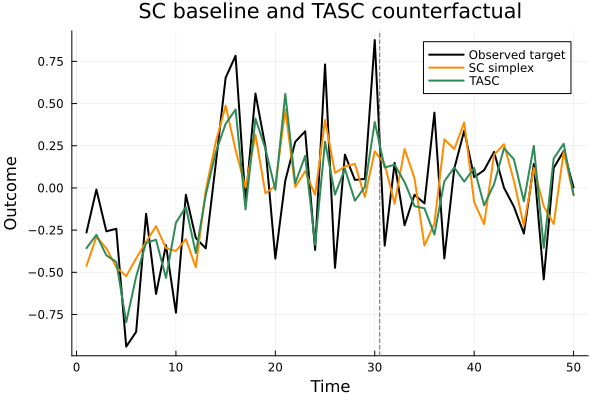

Preprocessing and Baselines
The package also includes preprocessing helpers and classical synthetic-control baselines ported from the Python package.
Matrix Helpers
PanelMatrix stores data in the Python helper orientation, with rows as time periods and columns as units.
using TASC
using Plots
using Statistics
Y, params, signal = simulate_tasc(N = 10, T = 50, d = 2, seed = 3)
T0 = 30
M = panel_matrix(permutedims(Y), T0; target = 1)
transform(M; method = :standard)
denoise(M; num_sv = 2)
inverse_transform(M)
size(M.data), M.denoised((50, 10), true)Hard singular value thresholding is also available directly:
Y_denoised = hsvt(Y; rank = 2)
size(Y_denoised)(10, 50)Classical Synthetic Control
The synthetic-control baseline expects donor matrices with rows as time periods and columns as donor units.
pre_donor = permutedims(Y[2:end, 1:T0])
pre_target = Y[1, 1:T0]
sc = fit_synthetic_control(pre_donor, pre_target; method = :simplex)
all_donor = permutedims(Y[2:end, :])
path = predict(sc, all_donor)
pre_r2 = score(sc, pre_donor, pre_target)
(length(path), round(pre_r2, digits = 3))(50, 0.531)Available methods are :ols, :ridge, :lasso, and :simplex.
The baseline path can be compared directly with TASC:
tasc_model = fit_tasc(Y; d = 2, T0 = T0, n_em = 20, tol = 1e-4)
tasc_pred = predict_counterfactual(tasc_model, Y)
times = 1:size(Y, 2)
plt = plot(
times,
Y[1, :];
label = "Observed target",
color = :black,
linewidth = 2,
xlabel = "Time",
ylabel = "Outcome",
title = "SC baseline and TASC counterfactual",
)
plot!(plt, times, path; label = "SC simplex", color = :darkorange, linewidth = 2)
plot!(plt, times, tasc_pred.target; label = "TASC", color = :seagreen, linewidth = 2)
vline!(plt, [T0 + 0.5]; label = "", color = :gray40, linestyle = :dash)